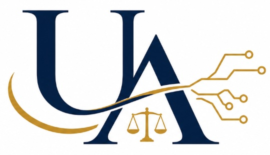
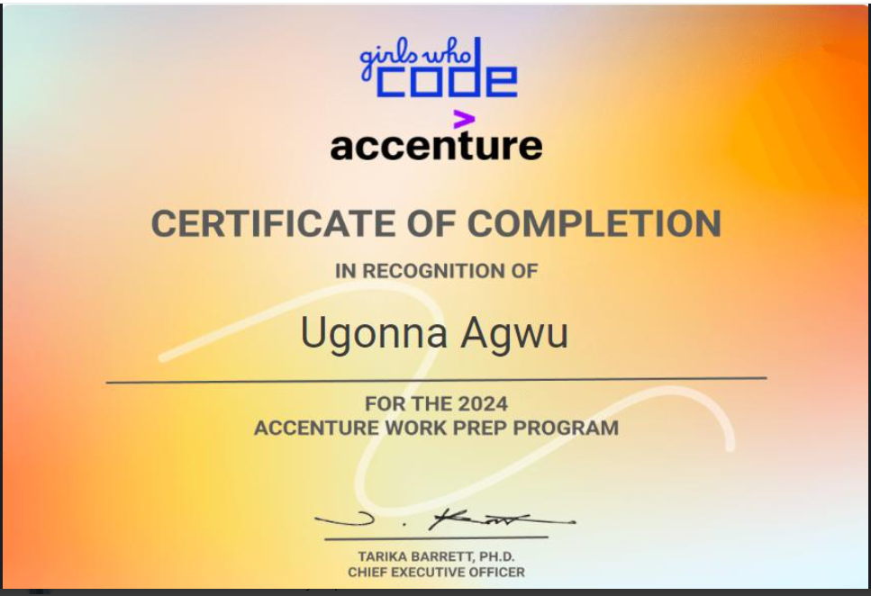

Anote · Machine Learning Intern
Worked on NLP model training, prediction and evaluation, including multimodal data processing and retrieval-augmented generation workflows.

Resume ↗LAW · TECHNOLOGY · EQUITY
Computer scientist and economist exploring AI, software engineering, public-interest technology, and the intersection of technology and law.
I’m a Washington University in St. Louis graduate with a B.S. in Computer Science and Economics and a minor in Psychology. My work spans machine learning, multimodal AI, software development, economic analysis, community leadership, and legal administration.
Worked on NLP model training, prediction and evaluation, including multimodal data processing and retrieval-augmented generation workflows.
Built a React application and machine-learning system using Azure AI Custom Text Classification for a music-emotion project.
Supported community-centered tornado-relief work, coordinating with organizations and helping with reporting and distribution of emergency resources.
Supported legal-office operations through document preparation, confidential file organization, database work, recordkeeping and administrative support.
Led technology workshops, mentorship, networking and professional-development programming for students pursuing technology careers.
Community-safety technology connecting real-time crime alerts, missing-person notifications and mental-health resources.
TECH FOR SOCIAL GOODView project ↗Systems combining audio, image, text and video for intelligent querying, analysis and generation.
PYTHON · RAG · NLPGitHub ↗Machine-learning work using Azure AI Custom Text Classification with a React interface and Spotify integration.
AZURE AI · REACTGitHub ↗MACHINE LEARNING FOUNDATIONS
Online Certificate in Machine Learning Foundations — Cornell University, 2024.
View certificate ↗
Explore the same interdisciplinary background through the lens that fits the opportunity.
LET’S CONNECT